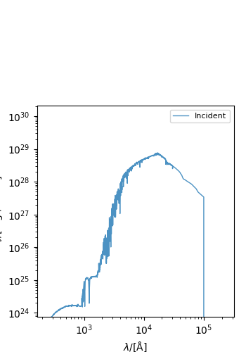
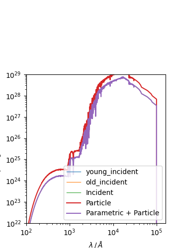
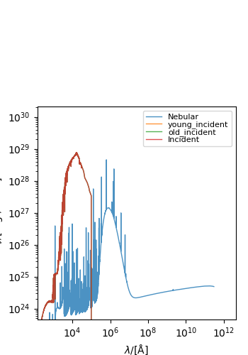
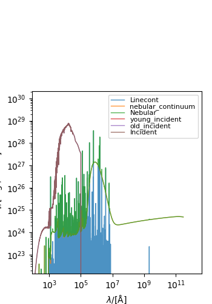
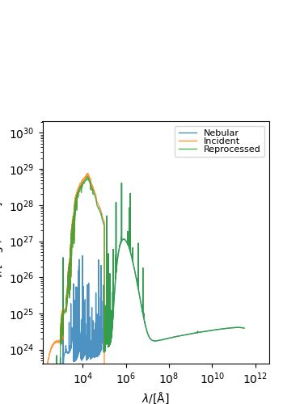
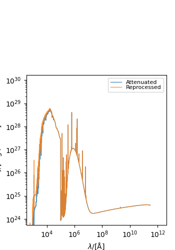
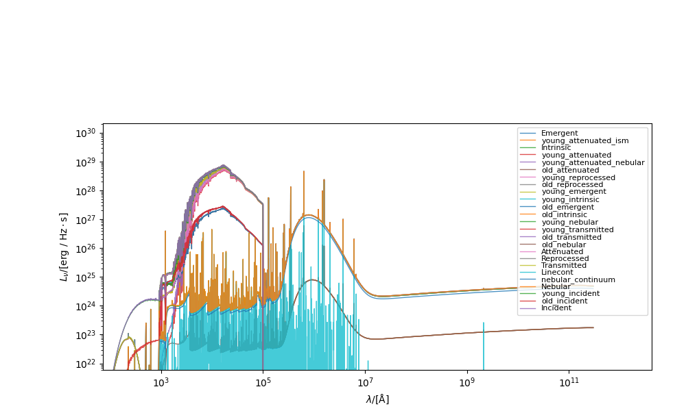
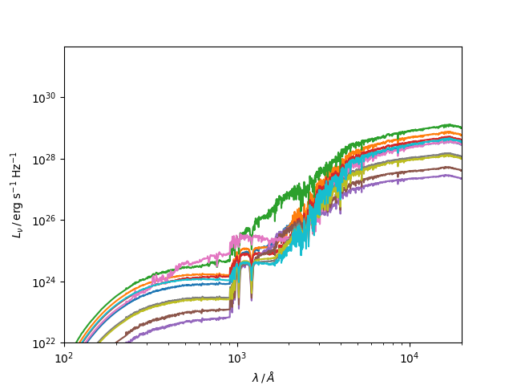

Note
Go to the end to download the full example code.
Camels example¶
Use test cosmological simulation data (from the [CAMELS simulations]( https://www.camel-simulations.org/)) to generate spectra and calculate photometry.
- 
- 
- 
- 
- 
- 
- 
- 
/opt/hostedtoolcache/Python/3.10.14/x64/lib/python3.10/site-packages/unyt/array.py:1949: RuntimeWarning: invalid value encountered in divide
out_arr = func(
Loaded 10 galaxies
--------------------------------------------------
| PHOTOMETRY (FLUX) |
|--------------------|---------------------------|
| U (λ = 3.64e+03 Å) | 4.16e-13 erg/(Hz*cm**2*s) |
|--------------------|---------------------------|
| V (λ = 5.51e+03 Å) | 1.07e-12 erg/(Hz*cm**2*s) |
|--------------------|---------------------------|
| J (λ = 1.22e+04 Å) | 1.94e-12 erg/(Hz*cm**2*s) |
--------------------------------------------------
--------------------------------------------------
| PHOTOMETRY (FLUX) |
|--------------------|---------------------------|
| U (λ = 3.64e+03 Å) | 3.65e-13 erg/(Hz*cm**2*s) |
|--------------------|---------------------------|
| V (λ = 5.51e+03 Å) | 9.64e-13 erg/(Hz*cm**2*s) |
|--------------------|---------------------------|
| J (λ = 1.22e+04 Å) | 1.82e-12 erg/(Hz*cm**2*s) |
--------------------------------------------------
Stellar luminosities available: ['incident', 'young_incident', 'old_incident', 'nebular', 'linecont', 'nebular_continuum', 'transmitted', 'reprocessed', 'attenuated', 'young_transmitted', 'young_nebular', 'old_nebular', 'old_transmitted', 'young_intrinsic', 'young_emergent', 'old_intrinsic', 'old_emergent', 'young_reprocessed', 'young_attenuated_nebular', 'young_attenuated', 'old_reprocessed', 'young_attenuated_ism', 'old_attenuated', 'intrinsic', 'emergent']
Stellar fluxes available: ['incident', 'young_incident', 'old_incident', 'nebular', 'linecont', 'nebular_continuum', 'transmitted', 'reprocessed', 'attenuated', 'young_transmitted', 'young_nebular', 'old_nebular', 'old_transmitted', 'young_intrinsic', 'young_emergent', 'old_intrinsic', 'old_emergent', 'young_reprocessed', 'young_attenuated_nebular', 'young_attenuated', 'old_reprocessed', 'young_attenuated_ism', 'old_attenuated', 'intrinsic', 'emergent']
import matplotlib.pyplot as plt
import numpy as np
from astropy.cosmology import Planck18 as cosmo
from synthesizer.emission_models import (
AttenuatedEmission,
CharlotFall2000,
IncidentEmission,
NebularEmission,
ReprocessedEmission,
StellarEmissionModel,
)
from synthesizer.emission_models.attenuation import PowerLaw
from synthesizer.filters import UVJ
from synthesizer.grid import Grid
from synthesizer.load_data.load_camels import load_CAMELS_IllustrisTNG
from synthesizer.sed import Sed
from unyt import Myr, dimensionless
# Get the grid
grid_dir = "../../tests/test_grid"
grid_name = "test_grid"
grid = Grid(grid_name, grid_dir=grid_dir)
# We then need to load our galaxy data. There are custom data loading
# script for different simulation codes in `synthesizer.load_data`. For
# CAMELS-IllutrisTNG there is the `load_CAMELS_IllutrisTNG` method
#
# If your simulation does not have its own front end, please use the
# templates in `synthesizer/load_data.py` to create your own.
gals = load_CAMELS_IllustrisTNG(
"../../tests/data/",
snap_name="camels_snap.hdf5",
group_name="camels_subhalo.hdf5",
)
print(f"Loaded {len(gals)} galaxies")
# this creates `gals`, which is a list containing a `synthesizer.Galaxy`
# object for each structure in the subfind file. These `Galaxy` objects
# contain lots of useful methods for acting on galaxies, in addition to
# the component parts of a galaxy. These components include `Stars`, `Gas
# `, and `BlackHoles`.
# Lets take a galaxy to work with
g = gals[1]
# Before we can generate any spectra we need to instantiate an emission model.
# To begin with lets just use a premade incident model to get the
# incident stellar spectra.
incident = IncidentEmission(grid)
# To get a spectra we just call the `get_spectra` method on the stars with
# whatever emission model we want to use, here the incident model.
spec = g.stars.get_spectra(incident)
# Lets use the `stars.plot_spectra` method to plot this spectra. This method
# can either plot all spectra on a component or a specific subset if desired.
g.stars.plot_spectra(show=True)
# Why might you want to create an `Sed` object? This class contains a lot
# of useful functionality for working with SED's. For example, we can
# calculate the broadband luminosities.
#
# First, get rest frame 'flux' from the `Sed`.
spec.get_fnu0()
# To get broadband luminosity we first need to define a filter collection
# object (UVJ default).
fc = UVJ(new_lam=grid.lam)
# And then we can apply it using the `Sed` helper function.
_UVJ = spec.get_photo_fluxes(fc)
print(_UVJ)
# ## Young and old stellar populations
#
# We can also restrict the age of star particles used for calculating the
# spectra. To do this we simply supply the emission model with a mask. Lets
# use incident emission as another example.
young_incident = IncidentEmission(
grid,
label="young_incident",
mask_attr="ages",
mask_thresh=100 * Myr,
mask_op="<",
)
old_incident = IncidentEmission(
grid,
label="old_incident",
mask_attr="ages",
mask_thresh=100 * Myr,
mask_op=">=",
)
# If we also want the total incident emission we can also combine the young
# and old emission and then feed this model to the spectra method to get
# all 3 spectra at once.
combined_incident = StellarEmissionModel(
grid=grid,
label="incident",
combine=(young_incident, old_incident),
)
spec = g.stars.get_spectra(combined_incident)
# Once again we can plot them all
g.stars.plot_spectra(show=True)
# ### Replacing young star particles with Parametric Star Formation Histories
#
# For simulations with low mass resolution, the sampling of the star
# formation history can be affected by Poisson scatter. This is
# particularly the case for young star particles; a single massive
# particle that happens to form close to the time of observation can
# significantly alter the integrated colour of the entire galaxy.
#
# To mitigate this, we provide a method for smoothing the recent star
# formation history of a particle galaxy by replacing each young star
# particle with a parametric SFH. An example is provided [here](../sed.ipynb).
#
# This functionality can be enabled by setting the argument `parametric_
# young_stars` on any `get_spectra_*` methods. This should be set to the
# age at which you wish to smooth the SFH. The default form of the SFH is
# constant, but this can also be modified by providing a parametric SFH
# object to the `parametric_sfh` argument.
parametric_spec = g.stars.get_spectra(
incident, parametric_young_stars=500 * Myr
)
plt.loglog(spec.lam, spec.lnu + spec.lnu, label="Particle")
plt.loglog(
parametric_spec.lam, parametric_spec.lnu, label="Parametric + Particle"
)
plt.legend()
plt.xlabel("$\\lambda \\,/\\, \\AA$")
plt.ylabel("$L_{\\nu} \\,/\\, \\mathrm{erg \\; s^{-1} \\; Hz^{-1}}$")
plt.ylim(10**22.0, 10**29.0)
plt.xlim(10**2.0, 10**5.2)
plt.show()
# ## Nebular emission
#
# If our grid file has been post-processed with CLOUDY we can produce the
# nebular emission for our camels galaxies. For this we need get a
# NebularEmissionModel
nebular = NebularEmission(grid)
# And then, like before, we just hand this off to the `plot_spectra` method
spec = g.stars.get_spectra(nebular)
fig, ax = g.stars.plot_spectra(show=True)
# With any of the spectra we've made so far we could also pass an escape
# fraction (fesc) but specifically for nebular we will get extra line and
# nebular emission if we pass a lyman alpha escape fraction.
nebular = NebularEmission(grid, fesc_ly_alpha=0.2)
spec = g.stars.get_spectra(nebular)
fig, ax = g.stars.plot_spectra(show=True)
# To get the gas reprocessed spectra, which
# we refer to as the *reprocessed* spectra, assuming some escape fraction
# `fesc`.
reprocessed = ReprocessedEmission(
grid,
fesc=0.2,
fesc_ly_alpha=0.1,
)
g.stars.get_spectra(reprocessed)
# The plots starting to get a bit messy now so let's select the spectra we
# want to plot
fig, ax = g.stars.plot_spectra(
show=True,
spectra_to_plot=("reprocessed", "incident", "nebular"),
)
# ## Dust attenuation
#
# We can apply a range of different dust models to our reprocessed spectra. To
# do so we can simply make an attenuated model and point it at our reprocessed
# model. To do so we need a dust_curve, for more details on these see the
# dust attenuation docs.
attenuated = AttenuatedEmission(
grid=grid,
emitter="stellar",
dust_curve=PowerLaw(slope=-1),
apply_dust_to=reprocessed,
tau_v=0.33,
component="stellar", # we can point models at different components
)
spec = g.stars.get_spectra(attenuated)
fig, ax = g.stars.plot_spectra(
show=True,
spectra_to_plot=["reprocessed", "attenuated"],
)
# Of course, in reality we won't be making individual models and calling
# get_spectra with them 1 by 1. Instead we can make/use large models
# which will generate all the spectra we want at once. For more details
# on making your own models see the emisison models docs. Here we will
# use a premade model that will produce spectra following Charlot&Fall2000
cf_model = CharlotFall2000(
grid,
tau_v_ism=0.33,
tau_v_nebular=0.67,
dust_curve_ism=PowerLaw(slope=-0.7),
dust_curve_nebular=PowerLaw(slope=-1.3),
age_pivot=10 * dimensionless,
)
spec = g.stars.get_spectra(cf_model)
fig, ax = g.stars.plot_spectra(show=True, figsize=(10, 6))
# ### Multiple galaxies
# If we want to create spectra for multiple galaxies and then interact with
# a particular spectra from them all in a single Sed object we can use a list
# comprehension. Here we grab the luminosity `lnu` of each galaxy into a
# list, and combine into a single sed object afterwards using the grid
# wavelength.
specs = np.vstack([g.stars.get_spectra(incident).lnu for g in gals])
specs = Sed(lam=grid.lam, lnu=specs)
# Importantly here, we don't create an SED object for each galaxy spectra
# . We instead create the 2D array of spectra, and then create an `Sed`
# object for the whole collection.
fig, ax = plt.subplots(1, 1)
ax.loglog(grid.lam, specs.lnu.T)
ax.set_ylim(
1e22,
)
ax.set_xlim(1e2, 2e4)
ax.set_xlabel("$\\lambda \\,/\\, \\AA$")
ax.set_ylabel("$L_{\\nu} \\,/\\, \\mathrm{erg \\; s^{-1} \\; Hz^{-1}}$")
# ### Calculate broadband luminosities
#
# We can then use the `Sed` methods on the whole collection. This is much
# faster than calling the method for each spectra individually, since we
# can take advantage of vectorisation. For example, we can calculate UVJ
# colours of all the selected galaxies in just a couple of lines.
#
# First get rest frame 'flux'
spec.get_fnu0()
# Define a filter collection object (UVJ default) and calculate the photometry.
fc = UVJ(new_lam=grid.lam)
_UVJ = spec.get_photo_fluxes(fc)
print(_UVJ)
_UVJ.plot_photometry(show=True)
# Do for multiple, plot UVJ diagram, coloured by $M_{\star}$
mstar = np.log10(
np.array([np.sum(g.stars.initial_masses) for g in gals]) * 1e10
)
specs.get_fnu0()
_UVJ = specs.get_photo_fluxes(fc)
UV = _UVJ["U"] / _UVJ["V"]
VJ = _UVJ["V"] / _UVJ["J"]
plt.scatter(VJ, UV, c=mstar, s=40)
plt.xlabel("VJ")
plt.ylabel("UV")
plt.colorbar(
label=r"$\mathrm{log_{10}} \, M_{\star} \,/\, \mathrm{M_{\odot}}$"
)
# ## Collective operations
#
# It is often useful to collectively do different operations on a `Galaxy
# `. Synthesizer enables this via some wrapper methods on a galaxy which
# will operate on it's components to, for instance, get the observed
# spectra or photometry for all spectra nested in a `Galaxy`.
# Get observed spectra for all spectra
g.get_observed_spectra(cosmo=cosmo)
# Get UVJ photometry for all spectra
g.get_photo_luminosities(fc)
g.get_photo_fluxes(fc)
print(
"Stellar luminosities available:", list(g.stars.photo_luminosities.keys())
)
print("Stellar fluxes available:", list(g.stars.photo_fluxes.keys()))
Total running time of the script: (0 minutes 3.402 seconds)